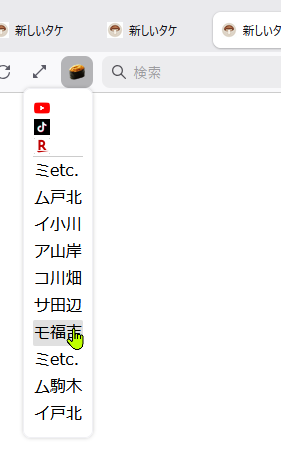

戻る
ブラウザ拡張
chromeは登録に金かかるから…
wnl-opener(Firefox用)
・現在のYouTubeライブURLを新しいタブで開くボタンです
・番組表ページの下にある【YouTubeでライブを見る】ボタンと仕組みは同じです
・番組表を開く手間が省けるだけ
wnl-menu(Firefox用)
・上記アドオンにTikTok,Rチャンネル,過去ライブを開く項目を追加しています
・Rチャンネルはチャンネルを指定して開くことができません
